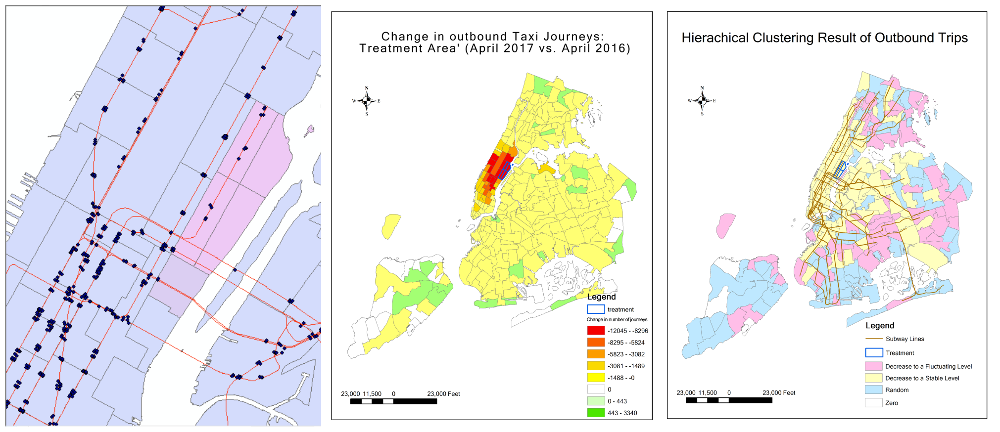

Taxi Usage Analysis after 2nd Ave. Subway Opened
Summary: This project analyzed how the Second Avenue Subway opened in January 2017 affected taxi journeys in NYC. We defined a treatment area (the Upper East Side to the east of the new stations) and a control area (Sutton Place/Turtle Bay North). A matrix of outgoing taxi journeys to other city destinations was constructed for both our treatment group and our control group. Hierarchical time series clustering analysis was performed to identify the groups of stations with significant changes in mobility patterns. We find significant decreases in taxi journeys to and from specific locations including Midtown, Upper West Side, Battery Park and Park Slope which are attributable to the new subway line. Our method has applications for transport planning and for evaluating whether public transit investments produced mobility benefits for different geographic regions of the city.
Methods: Data Analysis (Python, R), Spatial Analysis (Geopandas, ArcGIS), Visualization (ArcGIS, ggplot2, Matplotlib).